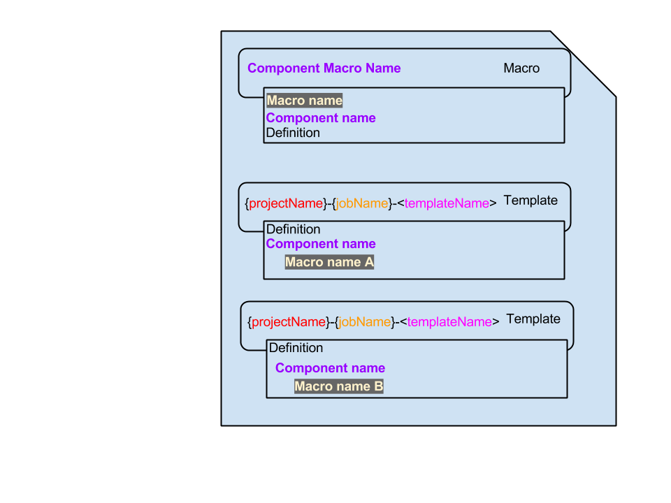

Jenkins Job Builder¶
The configuration setup of Jenkins Job Builder is composed of two main categories. Basic configuration and job configuration. Job configuration can be further split into several sub categories.
Basic Configuration¶
In the basic configuration you will have to specify how the Jenkins Job Builder CLI can connect to the Jenkins instance you want to configure and how it should act.
To use such a configuration file, you add --conf
Example:
localhost.ini [job_builder] ignore_cache=True keep_descriptions=False include_path=.:scripts:~/git/ recursive=False exclude=.*:manual:./development allow_duplicates=False [jenkins] #user=jenkins #password= url=http://localhost:8080/
Job Configuration¶
The configuration for configuring the jobs consists of several distinct parts which can all be in the same file or can be distributed in their own respected files.
These different parts can also be split into two different categories, those that are strictly linked within the configuration - via template matching - and those that are separate.
Separate: * Macro’s * Global defaults * Job configuration defaults * External configuration files
Linked: * Templates * Groups * Projects * Job definitions

Here’s a schematic representation on how they are linked. Exampe in YAML config:
- job-template: name: '{name}-{configComponentId}-ci' description: 'CI Job of {configComponentId}' <<: *config_job_defaults builders: - shell: 'jenkins-jobs test -r global/:definitions/ -o compiled/' - job-template: name: '{name}-{configComponentId}-execute' description: 'Executor Job of {configComponentId}' <<: *config_job_defaults builders: - shell: 'jenkins-jobs --conf configuration/localhost.ini update definitions/' - job-group: name: '{name}-config' gitlab-user: 'jvandergriendt' jobs: - '{name}-{configComponentId}-ci': - '{name}-{configComponentId}-execute': - project: name: RnD-Config jobs: - '{name}-config': configComponentId: JenkinsJobDefinitions
Macro’s¶
Macro’s are what the name implies, a group of related commands which can be invoked by the group. In Jenkins Job Builder this means you can define specific configurations for a component type (e.g. builders, paramters, publishes etc).
A component has a name and a macro name. In general the component name is plural and the macro name is singular. As can be seen in the examples below.
Here’s an example:
# The 'add' macro takes a 'number' parameter and will creates a # job which prints 'Adding ' followed by the 'number' parameter: - builder: name: add builders: - shell: "echo Adding {number}" # A specialized macro 'addtwo' reusing the 'add' macro but with # a 'number' parameter hardcoded to 'two': - builder: name: addtwo builders: - add: number: "two" # Glue to have Jenkins Job Builder to expand this YAML example: - job: name: "testingjob" builders: # The specialized macro: - addtwo # Generic macro call with a parameter - add: number: "ZERO" # Generic macro called without a parameter. Never do this! # See below for the resulting wrong output :( - add
To expand the schematic representation, you will get the following.
- builder: name: test builders: - shell: "jenkins-jobs test -r global/:definitions/ -o compiled/" - builder: name: update builders: - shell: "jenkins-jobs --conf config.ini update -r global/:definitions/" - job-template: name: '{name}-{configComponentId}-ci' <<: *config_job_defaults builders: - test - job-template: name: '{name}-{configComponentId}-update' <<: *config_job_defaults builders: - update
Global defaults¶
Global defaults are defaults that should be global for the jobs you configure for a certain environment. It is the job counterpart of the basic configuration, usually containing variables for the specific environment. For example, url’s, credential id’s, JDK’s etc.
Example:
global-defaults-localhost.yaml - defaults: name: 'global' flusso-gitlab-url: https://gitlab.flusso.nl nexus-npm-url: http://localhost:8081/nexus/content/repositories/npm-internal default-jdk: JDK 1.8 jenkinsJobsDefinitionJobName: RnD-Config-JenkinsJobDefinitions-ci credentialsId: '4f0dfb96-a7b1-421c-a4ea-b6a154f91b08'
Job configuration defaults¶
Job configuration defaults are nothing specific on their own. It refers to using a build in structure from YAML to create basic building blocks to be used by other configuration parts, usually the Templates.
Example (definition):
- config_job_defaults: &config_job_defaults name: 'config_job_defaults' project-type: freestyle disabled: false logrotate: daysToKeep: 7 numToKeep: 5 artifactDaysToKeep: -1 artifactNumToKeep: -1 jdk: '{default-jdk}'
- job-template: name: '{name}-{configComponentId}-ci' <<: *config_job_defaults
Templates¶
Templates are used to define job templates. You define the entirety of the job using global defaults, configuration defaults and where useful refer to placeholders to be filled in by the other downstream configuration items.
You can configure almost every plugin that is available for Jenkins, these are divided in subdivisions which reflect the Jenkins’ job definition sections.
For these subdivision and the available plugins see: http://docs.openstack.org/infra/jenkins-job-builder/definition.html#modules
For those plugins that are not supported, you can include the raw XML generated by the plugin. For how to do this, see: http://docs.openstack.org/infra/jenkins-job-builder/definition.html#raw-config
Example:
- job-template: name: '{name}-{configComponentId}-ci' display-name: '{name}-{configComponentId}-ci' description: 'CI Job of {configComponentId}' <<: *config_job_defaults builders: - shell: 'jenkins-jobs test -r global/:definitions/ -o compiled/' publishers: - archive: artifacts: '{filesToArchive_1}' fingerprint: true - archive: artifacts: '{filesToArchive_2}' fingerprint: true - email: notify-every-unstable-build: true send-to-individuals: true
Groups¶
Groups are used to group together related components that require the same set of jobs. Where you can also specify a similar set of properties, for example, a different JDK to be used.
The name property is mandatory and will be used to match Job definitions. The jobs property is also mandatory and will be used to match Templates for which a Job will be generated per matching Job definition.
Example
- job-group: name: '{name}-gulp' gitlab-user: 'jvandergriendt' artifactId: '{gulpComponentId}' jobs: - '{name}-{gulpComponentId}-ci': - '{name}-{gulpComponentId}-version': - '{name}-{gulpComponentId}-sonar': - '{name}-{gulpComponentId}-publish': - '{name}-{gulpComponentId}-deploy-prep': - '{name}-{gulpComponentId}-deploy': - '{name}-{gulpComponentId}-acceptance':
Projects¶
Projects are used to list the actual Job definitions, which via grouping and Templates get generated, and can obviously be used to define jobs for a specific project.
The name property is mandatory and will be passed along with a Job definition and is generally used to tie job definitions to Groups.
- project: name: RnD-Maven jobs: - '{name}-keep': gulpComponentId: keep-backend displayName: Keep-Backend
Job definitions¶
Job definitions are what is all about. Although they are part of the Project configuration item I treat them separately.
You list the jobs under a Project and start with the name of the Group it belongs to. After that, you should define at least a name component to be able to differentiate the different jobs you want. As can be seen in the above examples with the gulpComponentId.
External configuration files Sometimes you run into the situation you want to use a multi-line configuration for a plugin, or a set of commands. Or, used at in different configurations or templates.
Then you run into the situation that it is very difficult to manage in them neatly inside YAML configuration files. For this situation you are able to simply include a text file, via a native YAML construct. See: http://docs.openstack.org/infra/jenkins-job-builder/definition.html#module-jenkins_jobs.local_yaml
For example
- job: name: test-job-include-raw-1 builders: - shell: !include-raw include-raw001-hello-world.sh - shell: !include-raw include-raw001-vars.sh
Usage¶
The information to how you use the tool is very well explained in the documentation. See http://docs.openstack.org/infra/jenkins-job-builder/installation.html#running Automated maintenance If all the jobs you can administer are done via Jenkins Job Builder, you can start to automate the maintenance of these jobs.
Simply make jobs that poll/push on the code base where you have your Jenkins Job Builder configuration files.
Example
- config_job_defaults: &config_job_defaults name: 'config_job_defaults' project-type: freestyle disabled: false logrotate: daysToKeep: 7 numToKeep: 5 artifactDaysToKeep: -1 artifactNumToKeep: -1 jdk: '{default-jdk}' triggers: - pollscm: "H/15 * * * *" scm: - git: url: '{flusso-gitlab-url}/{gitlab-user}/{componentGitName}.git' credentials-id: '{credentialsId}' publishers: - email: notify-every-unstable-build: true send-to-individuals: true - job-template: name: '{name}-{configComponentId}-ci' display-name: '{name}-{configComponentId}-ci' description: 'CI Job of {configComponentId}' <<: *config_job_defaults builders: - shell: 'jenkins-jobs test -r global/:definitions/ -o compiled/' publishers: - archive: artifacts: '{filesToArchive_1}' fingerprint: true - archive: artifacts: '{filesToArchive_2}' fingerprint: true - email: notify-every-unstable-build: true send-to-individuals: true - job-template: name: '{name}-{configComponentId}-x' display-name: '{name}-{configComponentId}-execute' description: 'Executor Job of {configComponentId}, it will execute the update and delete old command' <<: *config_job_defaults builders: - shell: 'jenkins-jobs --conf configuration/localhost.ini update --delete-old -r global/:definitions/' - job-group: name: '{name}-config' gitlab-user: 'jvandergriendt' jobs: - '{name}-{configComponentId}-ci': - '{name}-{configComponentId}-x': - project: name: RnD-Config jobs: - '{name}-config': configComponentId: JenkinsJobDefinitions componentGitName: jenkins-job-definitions filesToArchive_1: scripts/*.sh filesToArchive_2: maven/settings.xml
Tips & Trick¶
As the documentation is so extensive, it can sometimes be difficult to figure out what would be a good way to deal with some constructs. Component identifier property One important thing to keep in mind is that in order to create a whole set of jobs via the groups and templates it imperative to have a component* identifier property.
This way you can define hundreds of jobs in a project, dozens of groups and dozens of templates and generate thousands of unique individual jobs. Scale does not actually matter in this case, if you have more than one job in a project you will need this property. If the jobs that will be generated will not differ the execution will fail.
Bulk
you can combine multiple files or even entire folder structures together in a single call. For example, if you manage all the jobs of a company or a department and configure them in separate files.
For example
jenkins-jobs --conf configuration/localhost.ini update --delete-old -r global/:definitions/